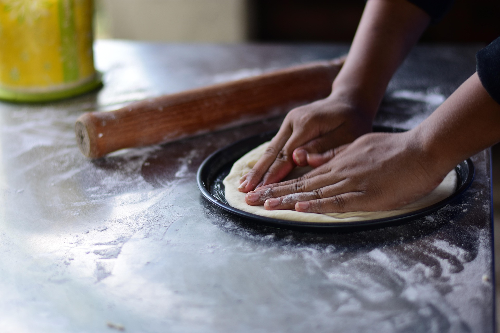

Daniel Bolaños
Encargado de cocina con 10 años de experiencia como chef
Las personas detrás de cada experiencia y platillo que llega a su mesa.

La mejor comida
Personas que se encargas de tener tu platillo en la mesa
Encargado de cocina con 10 años de experiencia como chef

Cocinero superior, experto en platillos italianos

Mesero
Daniel Bolaños es el ecargado de supervisar la calidad de la comida que prepara el chef Daniel Umaña posteriormente Alexis Rivera se encarga de llevarle su comida a su mesa